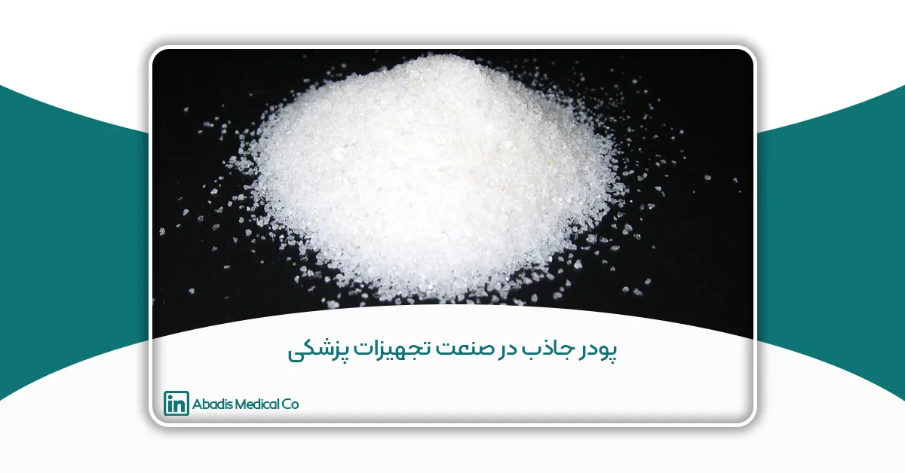

مقدمه
پودر جاذب (SAP) مادهای است که قابلیت جذب و نگهداری مقادیر زیادی از مایعات را داراست. این مواد عمدتاً به شکل شکر پودر یا ذرات ریز هستند و میتوانند مایعات را به سرعت جذب کرده و آنها را درون ساختار خود نگه دارند. پودرهای جاذب در طیف گستردهای از صنایع، مانند کشاورزی، بسته بندی مواد غذایی، ساختمانسازی و بتنسازی، استخراج نفت و به ویژه در صنعت پزشکی، به کار میروند. پودرهای جاذب به عنوان یکی از اجزای حیاتی در تولید بسیاری از محصولات پزشکی شناخته میشوند. این مواد به دلیل توانایی بالا در جذب مایعات، نقش مهمی در مدیریت و کنترل رطوبت در محصولات بهداشتی و درمانی ایفا میکنند؛ از پوشکهای بچه و نوارهای بهداشتی گرفته تا پانسمانهای پیشرفته و حین جراحی از پودر جاذب استفاده می شود. با توجه به اهمیت بالای این مواد در بهداشت و درمان، درک دقیقتر از انواع مختلف پودرهای جاذب، ویژگیها و کاربردهای آنها ضروری به نظر میرسد. در این مقاله به بررسی پودر جاذب، ویژگیها، کاربرد در صنعت پزشکی، مزایا و چالشهای مرتبط با آنها خواهیم پرداخت.
پودر جاذب چیست؟
در دهه ۱۹۶۰، دانشمندان به دنبال موادی بودند که بتوانند آب را به طور مؤثر جذب کرده و نگه دارند. در این دوره، وزارت کشاورزی ایالات متحده آمریکا (USDA) نخستین تحقیقات را در زمینه توسعه پلیمرهای سوپرجاذب آغاز کرد. پودر جاذب برای اولین بار در دهه ۱۹۶۰ میلادی در امریکا برای مصرف در کشاورزی به عنوان یک ماده برای افزایش ظرفیت جذب آب در خاک و زمان آبیاری استفاده شد.
در دهه ۱۹۷۰ میلادی سوپرجاذب ها برای نخستین بار وارد صنعت بهداشتی شدند و در پوشکهای یکبار مصرف کودکان مورد استفاده قرار گرفتند.
در دهه ۱۹۸۰، استفاده از پلیمرهای سوپرجاذب گسترش یافت و در صنایع دیگری مانند محصولات بهداشتی زنانه و محصولات پزشکی راه پیدا کرد. این دهه شاهد بهبود فناوریهای تولید و افزایش ظرفیت جذب پلیمرهای سوپرجاذب بود.
پلیمرهای سوپرجاذب (SAP:Super Absorbent Polymer) از نظر ظاهری موادی خشک و شبیه به شکر بوده و ذرات آن گرانولی هستند. پلیمر پودر جاذب که در بازار به شکل گرانولهای سفید هستند؛ ظرفیت جذب بالای مایعات را در مقایسه با وزن خود دارند. سوپرجاذب یک ماده پودر مانند تعریف میشود که میتواند چندین برابر وزن خود محلول آبی جذب کند. به عنوان مثال 10 گرم از این پودر میتواند در 1 لیتر آب را جذب نماید. پودر جاذب ژلهای پلیمری آبدوست یا هیدروژلها هستند، که قادرند مقادیر زیادی مایعات را جذب کنند. هیدروژل به دست آمده از سوپرجاذب باید از نظر فیزیکی به اندازهای قوی باشد که هنگام قرار گرفتن در آب، در برابر جاری شدن و حل شدن مقاومت کند. ذرات هیدروژل سوپرجاذب بدون حل شدن، تا رسیدن به حجم تعادلی خود متورم میشوند. پلیمر متورم شده به دلیل وجود برخی از انواع اتصالات عرضی حل نمیشود.
ترکیبات اصلی پودر جاذب چیست؟
پودر جاذب شامل پلیاکریلات اسید، هیدروکسید سدیم و آب برای فعال کردن مواد میباشد. مجموعهی آنها تحت فرایند پلیمریزاسیون یک شبکه سهبعدی پلیمیری را تشکیل می دهند.
ویژگیهای پودر جاذب
- قدرت جذب بالا (۲۰۰ تا ۶۰۰ برابر وزن خود)
- سرعت جذب بالا
- بی رنگ
- بدون بو
- غیرسمی
- دوام و پایداری بالا در محیط متورم
- زیست تخریب پذیر و ایمنی
- ظرفیت نگهداری
نحوه عملکرد پودر جاذب
وقتی پلیمرهای فوق جاذب پلیاکریلات سدیم با مایعات مانند آب، ادرار، خون یا ترشحات تماس پیدا میکنند، از طریق فرآیند اسمز آب را جذب میکنند؛ یعنی ذرات فوق جاذب مانند غشاهای نیمهنفوذپذیر عمل کرده، مولکولهای آب را جذب کرده و به طور قابل توجهی متورم میشوند. در واقع، یک گرم از پلیمر فوق جاذب میتواند چند صد گرم آب خالص را جذب کرده و مقادیر بسیار زیادی از آن آب را حتی تحت فشار متوسط نگه دارد.
با این حال، وقتی پلیاکریلات سدیم با مایعات آبی حاوی مقادیر بالای نمک مانند ادرار، ترشحات یا خون تماس پیدا میکند، اثر اسمزی مختل میشود و ظرفیت جذب به دهها گرم از مایع نمکی کاهش مییابد.
ویژگیهای جذب و ظرفیت مایعات پلیمر فوق جاذب را میتوان با نوع و مقدار عامل پیوند دهنده کنترل کرد تا پلیمرهای فوق جاذب مختلف تولید شود. پلیمرهای فوق جاذب با چگالی کم معمولاً ظرفیت جذب بالاتری از نظر جذب گرم به گرم دارند، در حالی که پودر جاذب با پیوند بالا ظرفیت کمتری دارند اما استحکام ژل بیشتری دارند و توانایی بیشتری برای نگهداری مایعات تحت فشار دارند. سایر ویژگیها مانند سرعت جذب آب یا نفوذپذیری مایع نیز به همین صورت قابل تغییر هستند.
چرا پودر جاذب در آب حل نمیشود و به حالت ژل میشود؟
پیوندهای عرضی بین زنجیرههای پلیمری یک شبکه سهبعدی تشکیل میدهند و از حل شدن جلوگیری میکنند. این به دلیل نیروهای بازگشتی الاستیک شبکه است و با کاهش آنتروپی زنجیرهها همراه است، زیرا آنها از حالت اولیه پیچ خورده خود سختتر میشوند. زنجیرههای پیچ خورده پیوند عرضی یافته زنجیرههای هیدراته میشوند. اکنون تعادلی بین نیروهای بازگشتی و تمایل زنجیرهها به تورم، رقیق شدن و حل شدن وجود دارد. درجه پیوند عرضی تأثیر مستقیم بر سطح تورم پلیمر و استحکام آن دارد.
کاربردهای پودر جاذب
۱. محصولات بهداشتی:
- پوشک: پودر جاذب جزء اصلی پوشکهای یکبار مصرف کودکان هستند که ادرار را جذب کرده، پوست کودک را خشک نگه داشته و خطر ایجاد جوشهای پوشکی را کاهش میدهند.
- نوار بهداشتی: در محصولات بهداشت بانوان، پودر جاذب به جذب مایع قاعدگی کمک کرده و سطح را خشک نگه میدارند.
- محصولات بیاختیاری بزرگسالان: پودر جاذب در پوشکها و پدهای بیاختیاری بزرگسالان برای مدیریت بیاختیاری ادراری استفاده میشوند و خشکی و کاهش بو را فراهم میکنند.
۲. کشاورزی:
- بهبود خاک: پودر جاذب به خاک اضافه میشوند تا نگهداری آب را بهبود بخشند، به ویژه در مناطق خشک و مستعد خشکسالی. آنها به حفظ رطوبت خاک کمک کرده و نیاز به آبیاری را کاهش میدهند.
- پوشش بذر: پودر جاذب میتوانند برای پوشش بذرها استفاده شوند و قدرت نگهداری آب را افزایش داده و نرخ جوانهزنی را بهبود بخشند.
۳. پزشکی:
- پانسمان زخم: پودر جاذب در محصولات پیشرفته مراقبت از زخم برای جذب ترشحات، حفظ محیط مرطوب برای بهبود و کاهش نیاز به تغییر پانسمان استفاده میشوند.
- پدهای جراحی: پودر جاذب در پدها و اسفنجهای جراحی برای مدیریت خون و مایعات بدنی در طول جراحی استفاده میشوند.
- کیسه ساکشن یکبار مصرف: پودر جاذب در کیسه ساکشن یکبار مصرف آبادیس باعث تبدیل مایعات و ترشحات به ژل در حین عمل میشوند؛ و از انتشار خون و ترشحات به اطراف جلوگیری میکنند و در نتیجه انتقال عفونت کاهش مییابد.
۴. کاربردهای صنعتی:
- جلوگیری از ورود آب به کابل: پودر جاذب در کابلهای فیبر نوری و برق برای جلوگیری از نفوذ آب که میتواند به کابلها آسیب برساند، استفاده میشوند.
- پدهای جذب آب: در محصولات کنترل نشت صنعتی، پودر جاذب برای جذب سریع و مهار نشت مایعات، از جمله مواد شیمیایی خطرناک استفاده میشوند.
- ساخت و ساز: پودر جاذب در بتن برای کنترل محتوای آب، کاهش ترک خوردگی و بهبود عملآوری استفاده میشوند.
۶. کاربردهای زیستمحیطی:
- پاکسازی نشت نفت: پودر جاذب میتوانند برای جذب نفت و هیدروکربنها طراحی شوند و در تلاشهای پاسخ به نشت نفت مفید باشند.
- جامدسازی زباله: پودر جاذب برای جامدسازی و تثبیت زبالههای مایع استفاده میشوند که مدیریت و دفع آنها را آسانتر میکند.
۷. بستهبندی:
- بستهبندی مواد غذایی: پودر جاذب در بستهبندی برای جذب رطوبت اضافی و حفظ تازگی محصولات غذایی استفاده میشوند.
- پدهای جذبکننده: پودر جاذب در پدهای جذبکننده برای بستهبندی گوشت، مرغ و غذاهای دریایی برای جذب و نگهداری مایعات اضافی استفاده میشوند.
نتیجه گیری
پلیمرهای فوقجاذب با ارائه راهحلهای نوآورانه برای مدیریت مایعات، تحول عظیمی در صنعت پزشکی ایجاد کردهاند. پودرهای جاذب یا پلیمرهای سوپرجاذب (SAP) به دلیل ویژگیهای بینظیر جذب و نگهداری مایعات، نقشی حیاتی در صنعت تجهیزات پزشکی ایفا میکنند. توانایی بینظیر آنها در جذب و نگهداری مقادیر زیادی از مایعات، آنها را در محصولاتی مانند پانسمان زخم، پدهای جراحی و کیسه ساکشن های یکبار مصرف، به اجزای ضروری این صنعت تبدیل کرده است. استفاده از این پودرها در محصولات مختلف پزشکی مانند پانسمانهای زخم، پدهای جراحی و کیسه ساکشن های یکبار مصرف آبادیس، نه تنها با حفظ محیط خشک، راحتی بیمار را افزایش میدهند، بلکه خطر عفونت را بهطور قابلتوجهی کاهش داده و به بهبود سریعتر کمک میکنند. توانایی بالای پودر جاذب در جذب سریع و نگهداری مایعات باعث کاهش خطر عفونت و آسیبهای ناشی از آن میشود.
ویژگیهای متنوع پودر جاذب، از جمله قابلیت تنظیم برای کاربردهای خاص، پایداری در شرایط مختلف و غیرسمی بودن آنها را برای استفاده پزشکی بسیار مناسب میکند. یکپارچهسازی آنها در دستگاهها و تجهیزات پزشکی منجر به افزایش کارایی و اثربخشی در درمانها و رویههای پزشکی شده است.
در نتیجه، استفاده از پلیمرهای فوقجاذب در صنعت پزشکی نمایانگر پیشرفت چشمگیری در بهداشت و درمان است. با بهبود عملکرد محصولات پزشکی و کمک به نتایج بهتر بیماران، پودر جاذب نقش حیاتی در پزشکی مدرن ایفا میکنند. با پیشرفت فناوری و ظهور نوآوریهای بیشتر، انتظار میرود تأثیر پودر جاذب در حوزه پزشکی افزایش یابد و راه را برای راهحلهای بهداشتی مؤثرتر و کارآمدتر هموار کند.
منابع
- https://gelok.com
- Super-Absorbent Polymer: A Review on the Characteristics and Application
- https://iranchembook.ir
-
Superabsorbents and their medical applications
- persolco.com